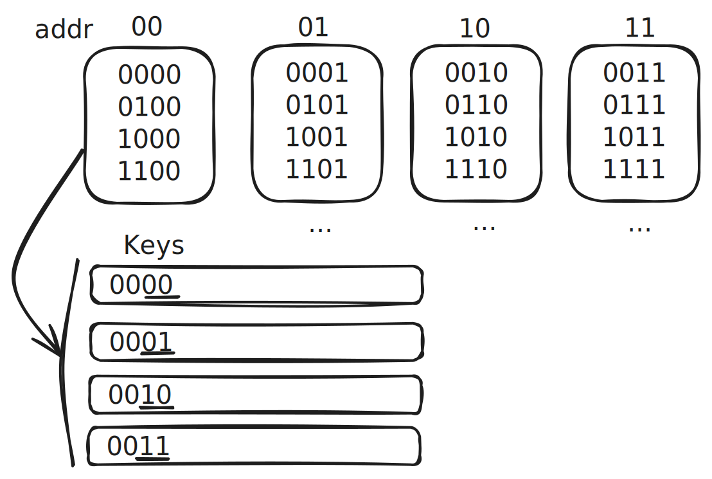

This is part of my branch prediction series.
- Visualizng CPU Pipelining
- Evaluating Branch Predictions
- Hacking LLDB to Evaluate Branch Predictions
How do we know if one branch prediction scheme is better than another?
Comparing algorithms comes up all the time in computer science,
and on the assumptions behind better.
For example, is quicksort better than insertion sort?
If you are familiar with computational complexity,
you’ll know that quicksort has better average-case performance.
That’s a mathematical fact, but there quite a few assumptions
built into that comparison. For starters, quicksort has the same
worst-case performance as insertion sort.
And insertion sort can even have better performance
when the list is “almost sorted”.
Another example is iterating over array of structs versus a
struct of arrays. In terms of computational complexity,
they are the same. But struct of arrays might be significantly
faster given the architecture of CPU cache memory.
Again, the comparison depends on the assumptions you make.
So how do we compare branch prediction schemes?
What assumptions do we have to make?
Let’s investigate these questions by analyzing the difference
between two hashing methods in two-level adaptive branch prediction
with global history.
I’m not going to cover the details of the algorithm, since
Dan Luu provides a nice overview here.
The focus here is on two different methods to calculate the key
for the branch prediction table, rather than comparing two distinct prediction algorithms.
For an n-bit key, the two methods are:
- concatenation: concatenates the last n/2 bits of the address and history
- gshare: takes the XOR of the last n-bits of the address and history

I’ll try to answer the following questions:
- why would we think gshare is better than concatenation?
- can we mathematically prove that gshare is better than concatenation?
- what should convince us that gshare is better than concatenation?
Reasons to think gshare is better
The basic argument why gshare is superior goes like this:
sometimes using more than n/2 address bits
would give us better predictions and sometimes using more of the branch history
would give us better predictions. The XOR hash in gshare uses more of both
by hashing all n-bits of the address and history into the key!
Compared concatenation where address and history have a predetermined
contribution to the key, gshare seems like an obvious improvement.
We can even come up with some examples that demonstrate this argument.
gshare is better
Same branch history, different predictions
With gshare, two different addresses with the same branch history
will always map to different keys: this is important
for prediction accuracy when the two branches have
different outcomes.
Branch address history gshare concat actual
A 1010 1011 0001 1011 0
B 1110 1011 0100 1011 1
gshare disambiguates the two branches
with different outcomes, while concatenation does not.
Using more history bits
Let’s assume we have a branch history pattern like this:
1101 1101 1101 1101...
With a 1-bit prediction table, long-term gshare has a 100%
prediction accuracy, but concatenation does not has 50% accuracy:
address history gshare concat actual
1010 1101 0111 1001 1
1010 1110 0100 1000 1
1010 0111 1101 1011 0
1010 1011 1000 1011 1
The reason is that the 0111 and 1011 histories alias.
Because the actual result alternates between 0 and 1,
the prediction bit alters as well.
Even if we used 2-bit saturation counter, we would only improve
the accuracy to 75%.
gshare is worse
However, we can also come up with an example where gshare
does worse than concatenation. Two keys in the branch
prediction table will collide in gshare
when the address of one equals the history of the other (and vice versa):
Branch Address History Gshare Concat Actual
A 0011 1100 0000 1100 1
B 1100 0011 0000 0011 0
In this case, both branches map to the same prediction entry (0000)
even though they have different behaviors. Concatenation keeps them
separate because it uses different bits from the address and history.
So if the branch was running in a way where branch A was always executed
before branch B, the prediction accuracy of gshare would be 0%!
(TODO: let’s say we have best case scenario with separate branch histories,
even then gshare is zero. Worse)
Branch Addr | History | Actual | Key | Prediction
-----------------------------------------------------------------
0011 | 1001 | 1 | 1010 | 0
-----------------------------------------------------------------
1100 | 0110 | 0 | 1010 | 1
-----------------------------------------------------------------
0011 | 0011 | 0 | 0000 | 1
-----------------------------------------------------------------
1100 | 1100 | 1 | 0000 | 0
-----------------------------------------------------------------
0011 | 0110 | 0 | 0101 | 1
-----------------------------------------------------------------
1100 | 1001 | 1 | 0101 | 0
-----------------------------------------------------------------
0011 | 1100 | 1 | 1111 | 0
-----------------------------------------------------------------
1100 | 0011 | 0 | 1111 | 1
-----------------------------------------------------------------
0011 | 1001 | 1 | 1010 | 0
-----------------------------------------------------------------
1100 | 0110 | 0 | 1010 | 1
-----------------------------------------------------------------
To me, this feels like a contrived example and ones
in the previous section feel like the typical case.
But how do we know? Can we prove it?
Mathematical proof that gshare is worse
Like quicksort vs. insertion sort, maybe we can write
a mathematical proof that gshare is better than concatenation.
Let’s come up with some assumptions and investigate.
Let’s define a “program” as a set branches, each with a unique n-bit address.
Each address has a random n-bit history.
One dimension of poor branch prediction performance is key collisions.
Can we show that gshare is less likely to have key collisions
than concatenation? No. In fact, the opposite is true.
gshare is slightly more likely to have key collisions
than concatenation! See the appendix for the proof
when the key size is 4-bits.
What’s going on here? We know gshare performs better in practice.
The problem is our assumptions. We assumed that the branch history
for each address is random. That might be reasonable assumption
when comparing sorting algorithms (although plenty of real world
data is almost sorted), but this is a really bad assumption for branch prediction.
Branch history is often very predictable, and even a simple algorithm
of “branch taken” can be 70% accurate!
Instead, we need to gather empirical data on branches taken,
analyze patterns, and compare algorithm performance.
Proving concatenation has fewer key collisions
Before we dive into a mathematical proof,
here’s some intuition why concatenation is more likely
to have fewer key collisions.
Collisions in a random program
Let’s suppose we have a program consisting
of 16 unique branch addresses, each with a random 4-bit branch history.
And let’s suppose our branch prediction table has a fixed 4-bit key size,
allowing 16 different keys.
The surprising result is that the XOR
is more likely to have key collisions
than concatenation!
XOR
Our goal is to show that for 16 unique 4-bit addresses,
with a random 4-bit history, XOR will randomly map the addresses
to any of the 16 keys.
To start, we’ll first show that it’s possible to map any address
to any key.
Suppose k is any possible 4-bit key.
Then if we have a fixed 4-bit address a,
we can always find a 4-bit history h such that
k = a ^ h:
k = 0 ^ k = (a ^ a) ^ k = a ^ (a ^ k) = a ^ h
And for our address a, if two different histories
map to the same key, they are the same history:
a ^ h1 = k = a ^ h2
h1 = a ^ k = a ^ (a ^ h2) = h2
Therefore, collisions must be possible, since
any address can map to any key and we are randomly
choosing the history.
Now let’s reframe the question into a standard combinatorial problem:
imagine our 16 unique
addresses are 16 different balls and our 16 keys are 16 different
bins. What’s the expected number of bins with 2 or more balls?
A good approach is to use the complement probability:
i.e. what’s the probability that a bin is empty
and what’s the probability that a bin has 1 ball?
Then the probability that a bin has 2 or more balls is
\[
1 - \left( \frac{15}{16} \right)^{16} - \binom{16}{1} \frac{1}{16} \left( \frac{15}{16} \right)^{15} \simeq 0.26
\]
Therefore, 16 * 0.26 = 4.23 bins are expected to have 2 or more balls.
So about 4 collisions are expected.
Concatenation
Now let’s think about concatenation.
This one is a little more complicated and also changes
depending on the concatenation scheme (for example,
we could use a concatenation ratio of 2:1 instead of 1:1).
But to show the general process, let’s just analyze the case
where we have 16 unique addresses with a random 4-bit history,
and we concatenate 2 bits from the address and 2 bits from the history
to form the key.
Because we are only using the last 2 bits of the address,
we can treat this problem as 4 separate cases of 4 balls
into 4 bins.

For example, the addresses that end in 00 can only be mapped
to the keys that start with 00.
Using the same formula as before, the expected number of bins
with 2 or more balls is about 0.267 * 4 = 1.05.
Since there are 4 independent cases of the 4 balls, 4 bins,
the expected number of bins with 2 or more balls is about
4.19.
Conclusion
So concatenation is less likely to have key collisions
than XOR! So why does gshare work better than concatenation
in practice? Because branch history is not random.
The only way to really know which performs better is to
analyze empirical branching data.